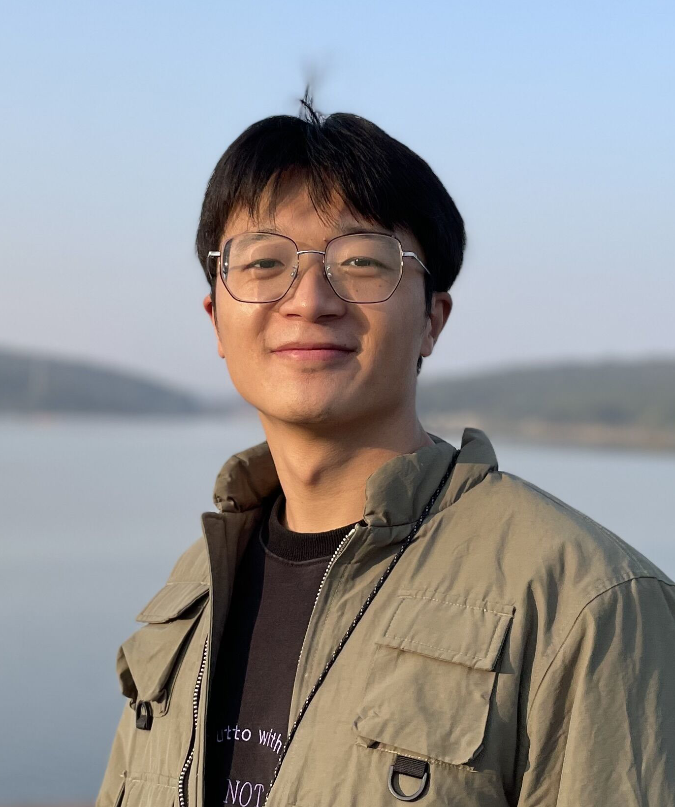

|  | 何 江 |
[2] J. He, J. Li, Q. Yuan, H. Shen, and L. Zhang, “Spectral Response Function-Guided Deep Optimization-Driven Network for Spectral Super-Resolution,” IEEE Transactions on Neural Networks and Learning Systems (IEEE TNNLS), in press, 2021. (SCI 1区Top, IF=10.451) [链接] [文章] [代码] [数据] [引用]
[1] J. He, J. Li, Q. Yuan, H. Li, and H. Shen, “Spatial-spectral Fusion in Different Swath Widths by a Recurrent Expanding Residual Convolutional Neural Network,” Remote Sensing (RS), vol. 11, no. 19, 2203, 2019. (SCI 2区, IF=4.848) [链接] [文章] [引用]
[1] J. He, J. He, J. Li and Q. Yuan, “Data-Driven and Model-Driven Spectral Superresolution Algorithms: Combination, Analysis and Application for Classification,” IEEE International Geoscience and Remote Sensing Symposium (IGARSS), in Hawaii, USA, 2020. (口头报告) [文章]
审稿人: